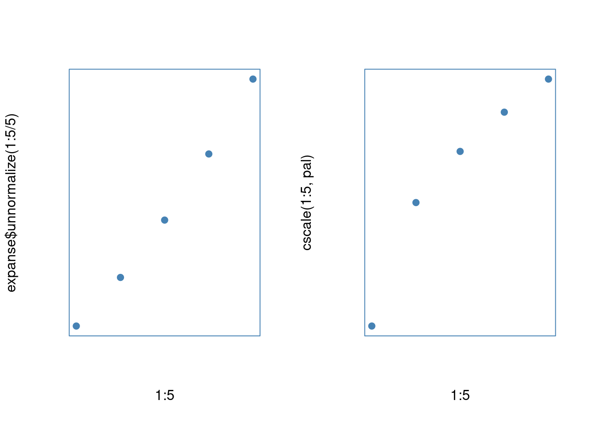

4 Challenges
Designing an interactive data visualization system presents a unique set of challenges. Some of these have been already touched on in the Section 3. This section homes in on these inherent challenges, discusses them in greater depth, and begins exploring avenues for possible solutions.
4.1 The structure of this chapter: Data visualization pipeline
When creating visualizations, it is rarely the case that we can plot the raw data directly, as is. Instead, before it can be rendered, the data often has to pass through several distinct transformation stages. Together, these stages form a data visualization pipeline (see e.g. Chi 2000; Wickham et al. 2009; Wu and Chang 2024).
Take, for instance, the typical barplot. There are several steps to drawing a barplot. First, we have to divide the data into parts, based on the levels of some categorical variable. Second, we need to summarize or aggregate each part by some metric, usually either sum or count. Third, we need to take these summaries and map them to visual encodings, such as x-axis position, y-axis position, and length. Finally, we use these encodings to render the individual bars as rectangles on a computer screen (see e.g. Franconeri et al. 2021).
These four steps - partitioning, aggregation, encoding, and rendering - are common to all data visualization systems, be they static or interactive. However, interactivity does present some unique challenges, since user interaction may affect any of the four stages. As a result, the changes may need to be propagated throughout the entire pipeline. Finding a general and efficient way to implement this propagation remains an open research topic (Wickham et al. 2009; Franconeri et al. 2021). Consequently, discussions of interaction within the context of the data visualization pipeline are often fairly vague (see Dimara and Perin 2019; Wu and Chang 2024).
In the next few sections, I will try to address this conceptual ambiguity by discussing the four fundamental steps of the data visualization pipeline in depth, and exploring challenges related to their implementation in interactive systems. Ultimately, my goal is to demonstrate that integrating interaction into certain parts of the pipeline, particularly the aggregation step, is more complex than commonly acknowledged. Further, if the goal is to build truly generic and robust interactive data visualization systems, this complexity must be addressed (see also Wu and Chang 2024).
4.2 Partitioning
The first step of any data visualization pipeline is to divide the data into parts or subsets. The reason for this initial step lies in our ultimate goal: to draw one or (usually) more geometric objects, representing some aspects of our data. Before we can do that, we need to define the set of data points each object represents. For typical, two-dimensional tables or data frames, this amounts to slicing the table’s rows into smaller sub-tables.
This partitioning operation fairly intuitive for aggregate plots (e.g. typical barplots and histograms), where each object represents multiple rows of the data. However, even one-to-one representations of the data (e.g. scatter plots and parallel coordinate plots), can be viewed this way, specifically, as slicing the table of \(n\) rows into \(n\) smaller tables of one row each. Similarly, plots with a single geometric object (e.g., a radar plot) can be considered as taking the entire data set as the one and only subset.
Thus, the process of splitting our data into subsets may appear straightforward. However, it does raise two fundamental questions:
- How much of the original data should the subsets contain?
- What should be the relationship between the subsets?
While common data visualization practices provide implicit solutions to these questions, in the data visualization literature, explicit answers are rarely given. This is unfortunate because choosing how to partition our data is a highly consequential decision: it involves making assumptions about both the data itself and the visualization’s goals. Especially in interactive data visualization, the relationships between the parts of our data become of crucial importance. Therefore, discussing these two questions is essential.
4.2.1 Showing the full data
“If someone hides data from you, it’s probably because he has something to hide.” (Cairo 2016, 47)
A common recommendation that many data visualization experts provide is that faithful visual representations should show the full data and leave nothing out. The moral behind this recommendation is fairly intuitive. A visualization which hides or obscures information, be it by intent or negligence, cannot be considered a truthful representation of the underlying information (Cairo 2016, 2019).
However, data hiding can occur in many different ways. First, the data itself can be cherry-picked or massaged (see e.g. Lisnic et al. 2024). This is arguably the most egregious case, and can in some cases amount to malicious statistical practices such as HARKing or p-hacking (see e.g. Kerr 1998; Lisnic et al. 2024; Head et al. 2015). However, even when showing the full data, some visualizations can obscure or downplay certain data features via poor design or incorrect use of visual encodings (Cairo 2016, 2019; Cleveland 1985; Ziemkiewicz and Kosara 2009). Finally, there is the issue of missing or incomplete data, where some data cannot be easily represented because it is simply not there.
An infamous example of data hiding leading to disastrous real-world consequences was the 1986 crash of the Space Shuttle Challenger (see Dalal, Fowlkes, and Hoadley 1989). During a pre-launch teleconference, engineers debated the effect of temperature on the performance of O-ring gaskets, as the forecasted temperature was significantly lower than during previous launches. Plot in the left panel of Figure 4.1 was used to argue that there was no correlation between temperature and O-ring failures. However, this plot had one significant flaw: it excluded launches where no failures occurred. After the disaster, when the data including the zero-failure launches was plotted, it revealed a clear trend of increasing number of failures as temperature decreased (see right panel of Figure 4.1, see also Dalal, Fowlkes, and Hoadley 1989).

Figure 4.1: Relationship between temperature and the number of O-ring failures within the 1986 Challenger data. Left: the original plot as presented during the pre-launch teleconference. Right: a reproduced plot of the same data, including the original data points (black), the excluded data points with zero failures (grey), and an estimated logistic regression fit (red). The source of right-panel data is Dalal, Fowlkes, and Hoadley (1989).
However, data hiding can also occur in more subtle ways, such as the above-mentioned poor design choices. Consider, for example, axis limits. Cleveland (1985) argues that axis limits should generally be expanded to avoid inadvertently obscuring data near these limits (see also e.g. Chen, Härdle, and Unwin 2008, 64). Take the following two scatterplots:

Figure 4.2: Without expanding axis limits, objects at or near the limits become less salient. Left: axis limits match the data limits exactly, and so the points in the top-left and bottom-right corner of the plot are represented by smaller area and the overall trend is distorted. Right: by expanding axis limits, we can ensure that trend is represented faithfully.
In the left scatterplot, the axis limits match the data limits exactly, whereas in the right plot, they are expanded by a small fraction (5%, ggplot2 default, Wickham 2016). The left scatterplot provides a misleading representation of the underlying trend, as data points near or at the axis limits (top-left and bottom-right corners) are represented by a smaller area, compared to points near the centre of the plot. For instance, the point in the bottom-right corner of the plot lies simultaneously at the limits of the x- and y-axis, and is thus represented by one-quarter of the area of the points in the center.
Finally, there is the issue of data hiding due to missing or incomplete data, which is a bit more complicated. While techniques of visualizing data with missing values do exist (see e.g. Unwin et al. 1996; Tierney and Cook 2023), they are often tied to specific visualization types and styles, and few general solutions are available. Properly analyzing the patterns of missingness in the data often calls for a full-fledged separate visualization workflow (Tierney and Cook 2023).
Either way, data hiding is something we should be mindful of. Unless there is a clear and justifiable reason, no data should be arbitrarily removed or discarded, and we should pick good visual representations to represent all of our data faithfully. In the ideal case, the visualization should present a clear and unambiguous mapping between the graphics and the data (Ziemkiewicz and Kosara 2009).
4.2.2 Disjointness and comparison
“To be truthful and revealing, data graphics must bear on the question at the heart of quantitative thinking: ‘compared to what’?” (Tufte 2001, 74).
“Graphics are for comparison - comparison of one kind or another - not for access to individual amounts.” (Tukey 1993)
An interesting yet underappreciated fact is that in many common visualization types, geometric objects tend to represent disjoint subsets of the data. That is, in most plots, each point, bar, line, or polygon represents a unique set of data points (rows of the data), with no overlap with other objects within the same graphical layer. This practice, despite being so common to border on a rule, is rarely given much attention.
There are of course counter-examples. For instance, certain visualizations of set-typed data “double up” the contribution of data subsets, such that the same subset of the data may appear in multiple objects (see e.g. Alsallakh et al. 2013, 2014; Conway, Lex, and Gehlenborg 2017; Lex et al. 2014). However, these types of visualizations are fairly rare, and represent the exception rather than the norm. When we see a barplot, we typically expect each bar to represent a unique set of cases.
But where does this unconscious “law” of showing disjoint parts of the data come from? I argue that it stems from the fundamental purpose of data visualization: comparison (Tufte 2001; Tukey 1993). When we visualize, we draw our graphics with the ultimate goal of comparing our data along a set of visual channels (Bertin 1983; Wilkinson 2012; Franconeri et al. 2021; Wilke 2019). This mirrors the comparisons we make about objects and events in the real world. And, in general, it is far easier to reason about objects and events which are independent, rather than ones which overlap or blend together. One example of this comes from basic probability theory, where the sum and product rules have independence as a pre-requisite (Kolmogorov and Bharucha-Reid 2018). Similarly, psychological research, such as the well-known “Linda experiment” (Tversky and Kahneman 1983), shows that people struggle with comparing the probability of non-disjoint events. Thus it seems that, in many ways, disjointness presents a more intuitive, “natural” model.
More fundamentally, disjointness may be more intuitive because it reflects a structure which mathematicians have long considered natural: a bijection (see e.g. Fong and Spivak 2019; Lawvere and Schanuel 2009). Specifically, if we take a set, split it into disjoint subsets, and label each subset, then there is a one-to-one correspondence between these subsets and the subset labels (i.e. the parts form an equivalence class). Practically, this means that we can go back and forth between the subsets and the corresponding labels, without losing any information.
The fact that disjoint subsets form a bijection may be particularly useful in data visualization and this may explain its ubiquity, see Figure 4.3. For instance, when drawing a barplot, if we divide our data into disjoint subsets and draw one bar corresponding to each part, then we can go back and forth between identifying subsets of the data corresponding to individual bars and vice versa. Thus, the function of identifying data subsets is invertible. In plots where the objects do not represent disjoint subsets, this correspondence is broken: if we select a subset of cases corresponding to a bar, there may be no simple way to identify the original bar from the cases alone. This issue applies both conceptually, when viewing static visualizations, and also more practically, when interacting with interactive visualizations, via features such as linked selection.
![Disjointness induces a one-to-one mapping (bijection) between geometric objects and subsets of the data. Suppose we mark out the cases corresponding to the leftmost bar (red). Top row: when each geometric object (bar) represents unique subset of data points, we can easily go back and forth between the object and its underlying subset (middle panel), and so the function of picking cases corresponding to each object is invertible. Bottom row: if there is an overlap between the cases represented by each object, then there may be no way to identify the original object after we have picked out the corresponding cases.](figures/geoms-bijection.png)
Figure 4.3: Disjointness induces a one-to-one mapping (bijection) between geometric objects and subsets of the data. Suppose we mark out the cases corresponding to the leftmost bar (red). Top row: when each geometric object (bar) represents unique subset of data points, we can easily go back and forth between the object and its underlying subset (middle panel), and so the function of picking cases corresponding to each object is invertible. Bottom row: if there is an overlap between the cases represented by each object, then there may be no way to identify the original object after we have picked out the corresponding cases.
4.2.2.1 Real-world example
To illustrate the idea of disjoint subsets on concrete, real-world example, take the following barplot representing the vote share among the top three parties in the 2023 New Zealand general election (Electoral Commission New Zealand 2023):

Figure 4.4: Barplot showing disjoint subsets of the data. The bars show the vote share among the top three parties in the 2023 New Zealand general election, with each bar representing a unique subset of voters.
Each bar represents a unique subset of voters and thus the bars show disjoint data. This is the type of data representation that we encounter most often, however, there are few explicit guidelines about this. Hypothetically, we could transform our data, and use the leftmost bar to show, for example, the union of the votes of National and Labour parties:

Figure 4.5: Barplot showing non-disjoint subsets of the data. Most of the bars show the same data as in Figure 4.3, however, the leftmost bar representing a union of National and Labour voters. The two leftmost bars are thus not disjoint. For a more realistic example, see Figure 4.7.
However, this way of representing the data has several problems. First, this type of visualization is arguably not very useful for addressing our visualization goals. For example, when visualizing election data such as the one above, we typically want to compare the relative number of votes each party received. Figure 4.5 this comparison needlessly difficult. Specifically, since the leftmost bar represents the union of National and Labour votes, we have to perform additional mental calculation if we want to compare the number of votes received by National and Labour directly (Cleveland 1985). Second, we have metadata knowledge (see e.g. Wilkinson 2012; Velleman and Wilkinson 1993) about the data actually being disjoint. We know that, in the New Zealand parliament electoral system, each voter can only vote for a single party. Hence, it does not make sense to arbitrarily combine the data in this way. Finally, Figure 4.5 also needlessly duplicates information: the number of votes the National party received is counted twice, once in the leftmost bar and again in the second-from-left bar. This goes against the general principle of representing our data parsimoniously (Tufte 2001).
Even when our goal is not to compare absolute counts, there are usually better disjoint data visualization methods available. For instance, if we were interested in visualizing the proportion of votes that each party received, we could instead draw the following plot:

Figure 4.6: Even when proportions are of interest, there are usually disjoint data visualization techniques available. The plot shows proportion of vote share of the top three parties in the 2023 New Zealand general election, with each bar segment again representing a unique subset of voters.
By stacking the bar segments on top of each other as in 4.6, we can easily compare proportion of the total number of votes each party received, while retaining a disjoint representation. Each bar segment now again represents a unique subset of voters.
The example above is fairly clear-cut case of where disjoint data representation is the better choice. However, there are also more ambiguous situations, such as when multiple attributes of the data are simultaneously present or absent for each case. Take, for example, the 2020 New Zealand joint referendum on the legalization of euthanasia and cannabis. In this referendum, the two issues were included on the same ballot and voters would vote on them simultaneously. The legalization of euthanasia was accepted by the voters, with 65.1% of votes supporting the decision, whereas the legalization of cannabis was rejected, with 50.7% of voters rejecting the decision (Electoral Commission New Zealand 2020).
We could visualize the referendum data in the following way:

Figure 4.7: Barplot showing a more realistic example of non-disjoint data representation. The bars show the vote share cast by New Zealand voters in the joint 2020 referendum on euthanasia and cannabis. The two bars show (mostly) the same set of ballots, with each single ballot contributing to the height of one segment in each bar.
In Figure 4.7, both bars include votes cast by the same voter (ignoring the votes where no preference was given for either issue, Electoral Commission New Zealand 2020), making the representation non-disjoint. In this case, the visualization works, since the underlying data is genuinely non-independent (each person cast two votes). If we had information about individual votes, it might be interesting to see how many people voted for both euthanasia and cannabis, how many voted for euthanasia but against cannabis, and so on. As was mentioned before, these types of visualizations can be useful for set-typed data (see e.g. Alsallakh et al. 2014).
However, even though the data here is fundamentally non-independent, there is often a way to represent it in a disjoint way that preserves most of the desirable properties. Specifically, we can split the data and draw it as separate plots or small multiples (Tufte 2001):

Figure 4.8: Small multiple figure showing the non-disjoint data represented as disjoint bars. The bars again show the vote share cast by New Zealand voters in the joint 2020 referendum on euthanasia and cannabis, however, this time, each bar within one plot represents a unique subset of the cases.
Here again, in Figure 4.8, each bar (segment) in each plot represents a disjoint subset of voters.
4.2.2.2 Disjointness and interaction
As I argued above, disjoint subsets offer a simpler mental model for understanding data visualizations. When each geometric object represents a unique set of data points, it becomes easier to reason about the comparisons being made. Conversely, when objects overlap or share underlying data points, additional cognitive effort is required to track the relationships between them.
Further, I argue that disjointness presents a particularly good model for interactive visualization (see also Wilhelm 2008). The natural correspondence between geometric objects and subsets of the data makes certain interactions more intuitive, and conversely, overlapping subsets can produce unexpected or unintuitive behavior. For instance, when a user clicks on a bar in a linked barplot, they might reasonably expect to highlight that particular bar, within the active plot, and the corresponding cases within all the other (passive) plots. If they see parts of other bars within the active plot get highlighted as well, they have to spend additional mental effort thinking about the relation between the objects (bars) and the subsets of the data, since this is no longer one-to-one.
Similar issue arises during querying. When a user queries an object that does not represent a disjoint subset of the data, should the returned summary statistics match the object or the (non-disjoint) subset? And how do we signal this to the user? Again, lack of disjointness introduces subtle ambiguities and complicates the interpretation of the presented information.
This does not mean that non-disjoint subsets cannot be usefuly combined with interaction, in specific contexts (see e.g. Alsallakh et al. 2014; Wilhelm 2008). However, I argue that, as a general model, disjointness provides a very good default. Disjoint subsets simplify our mental model, and this may be the reason why some authors discuss interactive features in the context of partitions, which are by definition disjoint (see e.g. Buja, Cook, and Swayne 1996; Keim 2002). Likewise, many common data analytic operations, such as SQL aggregation queries (GROUP BY, Hellerstein et al. 1999), operate on disjoint subsets, and this may be another reason why this model is familiar.
4.2.3 Plots as partitions
In the two preceding sections, I have argued that it is generally desirable for plots in our (interactive) data visualization system to have two fundamental features:
- Completeness: They should show the full data
- Distinctness: Geometric objects should represent distinct subsets of data points
These two features actually map onto two fundamental mathematical properties: surjectivity and disjointness. In turn, these two properties define a well-known mathematical structure: a partition. Therefore, partitions offer a compelling model for structuring our plots. I propose the following definition of a regular plot:
Definition 4.1 (Regular plot) Regular plot is a plot where the geometric objects within one layer represent a partition of the data, such that there is a bijection between these objects and (possibly aggregated) subsets of the original data.
Note that this definition still allows for plots where geometric objects in different layers represent overlapping data subsets, such as boxplots with overlaid points, or scatterplots with a smooth fit.
I propose regular plots as a fundamental building block of our interactive data visualization system. By building our interactive figures out of regular plots (as small multiples, Tufte 2001), we can ensure that the resulting visualization will be easily interpretable, even when combined with interactive features such as linking and querying.
4.2.3.1 Bijection on cases vs. bijection on subsets
Although I have not been able to find references conceptualizing plots as partitions in the same general way as I do here, some data visualization researchers have used the language of bijections when discussing graphics. For example, Dastani (2002) discusses plots as bijections (homomorphisms) between data tables and visual attribute tables. Similarly, Ziemkiewicz and Kosara (2009), and Vickers, Faith, and Rossiter (2012) argue that, in order to be visually unambiguous, plots should represent bijections of the underlying data. Essentially, these researchers argue that plots should represent bijective mappings of the data tables, such that each object represents one row of the data.
However, this “one-row-one-object” model sidesteps the issue of aggregation (see also Section 4.3). It operates on the assumption that the data is pre-aggregated, such that, for instance, when we draw a barplot or a histogram, we start with a table that has one row per bar. This is rarely the case in practice. Most visualization systems incorporate aggregation as an explicit component of the data visualization pipeline (see e.g. Chi 2000; Wickham 2016; Satyanarayan et al. 2015, 2016; Wu and Chang 2024). Howeever, acknowledging aggregation presents a problem for the one-row-one-object model, since aggregation is, by definition, not injective. Once we aggregate multiple data points into a summary or a set of summaries, we cannot recover the original cases (see also Wu and Chang 2024). Thus, the model proposed by authors such as Dastani (2002), Ziemkiewicz and Kosara (2009), and Vickers, Faith, and Rossiter (2012) would exclude many common aggregation-based types of plots, such as barplots and histograms. Ziemkiewicz and Kosara (2009) indeed do acknowledge that this is a problem, and admit that, at times, aggregation can be an acceptable trade-off, despite the inherent information loss.
However, if we instead model plots as bijection between parts of data and the geometric objects, rather than between individual data points and geometric objects, aggregation ceases to be a problem. Even after we aggregate a multiple-row subset of the data into a single row summary, this bijection is preserved. Thus, aggregation can be considered a part of the bijection. For instance, if we split our data into ten tables and aggregate each table, we are still left with ten tables of one row each that we can map bijectively to geometric objects.
4.2.3.2 Products of partitions
Many types of plots involve data that is partitioned or split across multiple dimensions. This is especially true in interactive data visualization, where features such as linking automatically induce another level of partitioning (Wilhelm 2008). This necessitates a general mechanism for combining partitions to form their product.
To give a concrete example, suppose we want to draw the following barplot:

We start with the following data, which includes a categorical variable (group, plotted along the x-axis), a variable representing selection status (selection, used to colour the bar segments), and a continuous variable that we want to summarize (value):
| group | selection | value | |
|---|---|---|---|
| 1 | A | 1 | 12 |
| 2 | A | 1 | 21 |
| 3 | A | 2 | 10 |
| 4 | B | 1 | 9 |
| 5 | B | 2 | 15 |
| 6 | C | 1 | 15 |
| 7 | C | 2 | 12 |
| 8 | C | 2 | 13 |
To draw individual bar segments, we need to sum value across the subsets cases corresponding to each segment. To do this, we first need to split our data into multiple subsets corresponding to the partition formed by taking the product of group and selection variables.
In R, the general data structure for representing partitions is the factor S3 class. In a factor, all elements of a vector are assigned a label, such that each label represent one disjoint part of the data. Unfortunately, there is no built-in function for creating a Cartesian product of two factors. However, we can easily emulate it using paste function to combine factor levels as strings element-wise:
product_factor <- paste(df$group, df$selection)
split_dfs <- split(df, product_factor)
render_tables(split_dfs)
|
|
|
|
|
|
We can then summarize each small data set by summing value:
summarized_dfs <- lapply(split_dfs, function(x) {
aggregate(value ~ ., data = x, sum)
})
render_tables(summarized_dfs)
|
|
|
|
|
|
Finally, to “stack” the segments on top of each other, we need to combine the summaries back together, within the levels of group variable. We can do this by grouping the data sets by the group variable and taking their cumulative sum:
grouped_dfs <- split(summarized_dfs, sapply(summarized_dfs, function(x) x$group))
stacked_dfs <- lapply(grouped_dfs, function(x) {
x <- do.call(rbind, x)
x$value <- cumsum(x$value)
rownames(x) <- NULL # Remove rownames for nicer formatting
x
})
render_tables(stacked_dfs)
|
|
| group | selection | value |
|---|---|---|
| C | 1 | 15 |
| C | 2 | 40 |
Now, we can combine these tables into one data.frame and render:
combined_df <- do.call(rbind, stacked_dfs)
# Need to reverse factor and row order for ggplot2 to layer segments correctly
combined_df$selection <- factor(combined_df$selection, levels = c(2, 1))
combined_df <- combined_df[6:1, ]
ggplot(combined_df, aes(x = group, y = value, fill = selection)) +
geom_col(position = position_identity())
What we have just shown is an example of a simple split-apply-combine pipeline (Wickham 2011). This type of a pipeline is necessary in most types of plots and data visualization systems. For instance, the following ggplot2 call produces a similar data visualization pipeline like the one we described above:
To be more explicit, in the ggplot2 call above, we specify that we want to partition the data set by the Cartesian product of the x, y, and fill variables. See the following comment from the ggplot2 documentation (Wickham 2016):
# If the `group` variable is not present, then a new group
# variable is generated from the interaction of all discrete (factor or
# character) vectors, excluding `label`.We then compute whatever summary we want (sum). Finally, when a fill or col aesthetic is used with geom_bar, ggplot2 also automatically stack the bars on top of each other by summing their heights. Similar strategy is employed for many other types of stacked plots, including pie charts, histograms, or density plots (Wickham 2016).
4.2.3.3 Limits of flat product partitions
For many common plot types, a single “flat” product of all factors/partitions works reasonably well. However, for other types of plots, this simple model is not enough. Specifically, certain types of plots exhibit hierarchical relationships between the partitions which cannot be represented under this flat model (see also Slingsby, Dykes, and Wood 2009; Wu 2022).
To give a concrete example, let’s turn back to the barplot from the section above (4.2.3). To draw the barplot, we first split our data into smaller tables, summarized each table by summing the values, stacked the summaries by taking their cumulative sum, and finally used the resulting data frame to render bar segments. This gave us a stacked barplot, which is a good visualization for comparing absolute counts across categories.
However, what if, instead of comparing absolute counts, we wanted to compare proportions? It turns out there is another type of visualization, called the spineplot, which can be used to represent the same underlying data as a barplot, however, is much better suited for comparing proportions:

Figure 4.9: The same underlying data represented as a barplot (left) and a spineplot (right).
Like barplots, spineplots represent some summary statistic (usually counts), aggregated within the levels of a product of two categorical variables. However, unlike barplots, spineplots map the underlying statistics to both the y-axis position (height) and the bar width. Furthermore, the y-axis position is normalized, such that the heights of the different segments within the same category add up to one. This normalization makes it possible to compare the relative frequencies within categories directly (notice how the right panel in Figure 4.9 makes it obvious that the proportion of red cases within the B and C categories is the same). Thus, like the barplot, the spineplot is a valuable tool for visualizing categorical data, especially when we can use interactive features to switch from one type of representation to the other.
Although barplot and spineplot represent the same underlying data, turning one into the other is not always easy. Specifically, while many grammar-based visualization systems offer a simple declarative syntax for defining barplots, they lack such simple syntax for spineplots. For instance, to draw a spineplot in ggplot2, we first need to do a substantial amount of data wrangling (creating the plot in the right panel of Figure 4.9 took over 10 lines of code, using standard dplyr syntax). This same hierarchical dependence applies to other “normalized” types of plots, such as spinograms, as well as innately hierarchical displays such as treemaps and mosaic plots [see e.g. Theus (2002); slingsby2009].
4.2.3.4 Partitions and hierarchy
Why are spineplots so tricky? The reason is that they force us to confront the hierarchical nature of (interactive) graphics (McDonald, Stuetzle, and Buja 1990; Keller, Manz, and Gehlenborg 2024). Specifically, while in a barplot, we can get by with a single flat partition of the data, in a spineplot, the data is summarized and stacked along and across different levels of aggregation (Wu and Chang 2024):
- Along the x-axis, we stack the summaries across the levels of the top-level factor/category
- Along the y-axis, we stack the summaries across the levels of a product of two factors and normalize them by the values within the levels of the top-level factor.
For example, assume we have a data set with two categorical variables, with \(j\) and \(k\) levels respectively. If we want to render a spineplot using these two variables, it is not enough to simply split our data into \(j \cdot k\) tables. Instead, we need to partition our data twice: first, split it into \(j\) tables, and second, split it into \(j \cdot k\) tables. We also need to keep track of the which of the \(j\) tables on the first level of partitioning corresponds to each of the \(j \cdot k\) smaller tables. This automatically induces a hierarchical relationship, where the resulting data subsets form a graph - specifically, a tree - see Figure 4.10:

Figure 4.10: A diagram of the hierarchical relationship between the subsets of the data represented by a spineplot/barplot. The whole data set is partitioned into bars, which are in turn partitioned into bar segments.
In 4.10, each vertical level represents a data partition, and arrows indicate relationships between data subsets, such that a bar subset is composed of segment subsets, and the whole data set is in turn composed of bar subsets. This same tree can be used to represent both barplots and spineplots. For a stacked barplot, this tree structure can be implicit, since we can work with the lowest level of the partitioning only (the segments; ignoring details such as maintaining correct stacking order). However, for spineplots, this hierarchical structure is essential. In spineplots, we apply transformations across the levels of the hierarchy: we need to normalize the statistics corresponding to each segment by the values within the parent bar. This is only possible if each segment can reference its parent bar in some way.
Thus, we need a way for thinking about the hierarchical relationships in our data. Furthermore, for reasons that will become clear later, it may be beneficial to introduce a more formal, mathematical framework for thinking about this hierarchy. A simple algebraic structures for encoding hierarchies is a preorder.
4.2.3.5 Plots as preorders
A preorder is a binary relation on a set \(S\), generally denoted by \(\leq\), that is both reflexive and transitive. In simpler terms, given a preordered set \(S\), any two elements \(a, b \in S\) either relate (\(a \leq b\), meaning \(a\) is “less than” \(b\)), or they do not relate at all. Further, the relation obeys some common sense properties: every element relates to itself (reflexivity), and if \(a\) relates to \(b\) and \(b\) relates to \(c\), then \(a\) relates to \(c\) as well (transitivity).
We can turn our hierarchy of data subsets in Figure 4.10 into a preorder very easily, by simply being more explicit about the relations in the figure. Specifically, define set \(S\) as the set of data subsets, and the binary relation \(\leq\) as the set inclusion relation \(\subseteq\). Then, we see that the two properties of preorders do indeed hold: every data subset is included in itself (reflexivity), and if a segment subset is a part of a bar subset, and bar subset is a part of the whole data set, then the segment subset is, clearly, a part of the whole data set as well (transitivity). We can describe this preorder via the following diagram (known as a Hasse diagram):

Figure 4.11: A diagram of a preorder of data subsets ordered by inclusion, corresponding to a barplot or spinogram. \(W\) represents the whole data set, \(B_i\) represent bars, and \(S_j\) represent individual bar segments. Arrows indicate set inclusion.
Notice the similarity to Figure 4.10. There really is not anything new here, we are simply being more explicit about our data assumptions. The real utility of this approach will be revealed later. However, for now, it may be useful to revise our definition of a regular plot:
Definition 4.2 (Regular plot 2) Regular plot is a plot where the geometric objects within one layer represent a preorder of data subsets ordered by inclusion (such that there is a bijection between these objects and the data subsets, and the subsets on the same order level represent a partition of the data).
4.2.3.6 The graph behind the graph
To summarize, graphs are graphs. As a bit of a playful side-note, this view is not shared by everyone. Particularly, the poster of the following meme shared on the Mathematical Mathematics Memes Facebook group (Martínez 2024) might not agree:
![A joke image shared in the Mathematical Mathematics Memes Facebook group on the 28th of March, 2024 [@mathematicalmathematics2024].](figures/graphs-cosplayers.jpg)
Figure 4.12: A joke image shared in the Mathematical Mathematics Memes Facebook group on the 28th of March, 2024 (Martínez 2024).
I hope I have made a reasonably strong case here that many data visualization types are not “delusional cosplayers”. By organizing our data into a preorder, we induce a graph-like, part-whole relationship on the subsets. Thus, graphs really are graphs.
However, organizing our data into a preorder introduces a new kind of challenge: preserving the inherent structure. Preorders are algebraic objects imbued with structure, and, intuitively, it would be wrong to disregard this structure in the subsequent steps of the data visualization pipeline. For example, in a barplot, if we split our bars into segments, it would be inconsistent to stack some segments on top of each other while plotting others side-by-side. Clearly, any further manipulation of the hierarchically partitioned data should respect this underlying structure. However, what does it really mean to respect the structure of our data? This question will be explored in detail in the following section, which deals with the next step of the data visualization pipeline: aggregation.
4.3 Aggregation
“This system cannot produce a meaningless graphic, however. This is a strong claim, vulnerable to a single counter-example. It is a claim based on the formal rules of the system, however, not on the evaluation of specific graphics it may produce.”
“Some of the combinations of graphs and statistical methods may be degenerate or bizarre, but there is no moral reason to restrict them.”
Wilkinson (2012), The Grammar of Graphics, pp. 15 and 112.
The second step of any data visualization pipeline is aggregation. Specifically, after we split our data into a hierarchy of parts (a preorder), we need to summarize each part via a set of summary statistics. Further, as I have hinted at in the previous section, these summaries should respect the hierarchical nature of the data. Thus, while the computing summaries may seem like a fairly straightforward step in the visualization pipeline, there is more complexity here than meets the eye. This will be the main subject of the present section.
4.3.1 The relationship between graphics and statistics
A key issue in data visualization, which is also the central theme of the present thesis, concerns the relationship between graphics and statistics. Specifically, when we summarize our data and then render these summaries as geometric objects, an important question arises: can we pair arbitrary statistics and geometric objects? Or are there constraints which limit which statistics and geometric objects can be effectively combined, particularly when interaction is involved?
4.3.1.1 Independence: The grammar-based model
The approach of treating graphics and statistics as independent entities is highly appealing. Indeed, it is the cornerstone of the immensely popular “grammar-based” model of visualization, introduced by Wilkinson in his seminal work The Grammar of Graphics (2012). Under this model, visualizations are constructed out of independent, modular components, such as geometric objects, statistics, scales, and coordinate systems. See the following quote by Wilkinson (2012, 14–15):
“We have tried to avoid adding functions, graphs, or operators that do not work independently across the system. There are doubtless many statistical graphics the system in this book cannot completely specify. We can add many different graphs, transformations, types of axes, annotations, etc., but there are two limitations we will always face with a formal system.
The grammar-based model offers many advantages, including simplicity and expressive power. This has contributed to its widespread adoption and implementation in many data visualization systems (see e.g. McNutt 2022; Kim et al. 2022; Vanderplas, Cook, and Hofmann 2020; Wickham 2010; Satyanarayan, Wongsuphasawat, and Heer 2014; Satyanarayan et al. 2016). The canonical example is the famous ggplot2 package (Wickham 2010). In ggplot2, plots are built out of components such as geometric objects (called geoms), statistical summaries (stats), and scales. These components can be flexibly combined, allowing the user to express a wide range of graphics using a small set of primitives. The expressive power of ggplot2 has made it one of the most popular R packages of all time.1.
However, despite its advantages, the grammar-based model has one fundamental flaw: graphics and statistics are not truly independent (see also Wu and Chang 2024). Instead, the visual representation of data must be congruent with its mathematical properties. This constraint, while present even in static visualizations, becomes especially critical in interactive contexts. Let’s illustrate this point with an example of real-world data.
4.3.1.2 Stacking: Limits of independence
For this example, I will use famous data set from a study on the effect of smoking on child lung capacity (Tager et al. 1979; Kahn 2005). In the study, the researchers measured children’s forced expiratory volume (FEV), and recorded it alongside age, height, sex, and smoking status.
A rather surprising feature of this data set is that, at a glance, the children who smoked actually had greater lung volume than non-smokers. In ggplot2, we can easily create a boxplot showing the relationship between smoking status and FEV using the following short code snippet:
fev <- read.csv("./data/fev.csv")
library(ggplot2)
ggplot(fev, aes(smoke, fev, fill = smoke)) +
geom_boxplot()
# There is actually a bit more code involved in producing the plot below,
# but it all just has to do with design/aesthetic flair
Before we start extolling the benefits of smoking for juvenile lung health, it may be a good idea to first look at some confounding variables. Lung volume develops with age, and the researchers had collected data from children ages three and up. Clearly, there were not going to be many smokers among three-year olds, so we should make sure age is not a confounder.
We can verify that there indeed is a strong relationship between age and FEV like so:

From the plot above, we can see that age and FEV correlate strongly, and also that the smokers tend to be quite a bit older than the non-smokers. To visualize the distribution of smokers and non-smokers across age a bit more clearly, we can draw an ordinary stacked barplot:

Figure 4.13: The number of participants by age and smoking status. Notice that the bar segments ‘stack’, such that the height of the whole bar accurately represents the combined number of smokers and non-smokers.
The plot above clearly shows that there were more smokers than non-smokers, and that smokers tended to be on average older. This provides a support for our confounding hypothesis.
Now, what if we wanted to compare FEV across the different ages? A data visualization novice might do something like below, and draw a stacked barplot of the average FEV in each age group:

Figure 4.14: A fundamentally flawed visualization of the average FEV by age and smoking status. Notice that the total height of the stacked bars is meaningless: it represents the sum of grouped averages, which is not a valid summary of the combined smoker and non-smoker data.
At a glance, the plot in 4.14 looks fine. However, what do the heights of the stacked bars actually represent? Each coloured bar segment represents a mean of the fev variable, grouped by the levels defined by the product of the age and smoke variables. By stacking the bars on top of each other, we are essentially summing up the average FEV of smokers and non-smokers, within the given age category.
4.3.1.3 Some statistics are stackable but others are not
The visualization in 4.14 is problematic because the bar heights lack a meaningful statistical interpretation. The sum of group means is not something that most consumers of visualizations would know how to interpret or care about. In the previous example, in Figure 4.13, the heights of the stacked bars represented valid overall counts - the number of smokers and non-smokers within a given age category combined. In Figure 4.14, this is no longer the case - the sum of the group means is different from the mean of the combined cases, and so may be the mean of the group means.
In ggplot2, stacking is implemented as a purely graphical operation. That is, within the context of the visualization system, stacking operates on geometric objects (rectangles), irrespective of the underlying summary statistics. However, as we can see from the example above, this can cause problems - what we stack matters. Indeed, many data visualization researchers have explicitly warned about this problem:
“Stacking is useful when the sum of the amounts represented by the individual stacked bars is in itself a meaningful amount” (Wilke 2019, 52).
“Because this gives the visual impression of one element that is the sum of several others, it is very important that if the element’s size is used to display a statistic, then that statistic must be summable. Stacking bars that represent counts, sums, or percentages are fine, but a stacked bar chart where bars show average values is generally meaningless.” (Wills 2011, 112).
“[…] We do this to ensure that aggregate statistics are always computed over the input data, and so users do not inadvertantly compute e.g., averages of averages, which can easily lead to misinterpretation.” (Wu 2022)
Based on the quotes above, one might get the impression that we can only ever “stack” or “highlight” sums and counts, to get a valid combined summary statistics. However, take a look at the following plot:
# Code is not included because this plot cannot be recreated
# with a simple ggplot2 call (without data wrangling)
Figure 4.15: The maximum of maxima is a valid maximum of all cases.
Here, in Figure 4.15, we again plot FEV for smokers and non-smokers across the different age groups, however, this time, we display the maximum FEV on the y-axis. From this plot, we can see that, in most of the age categories which included smokers (age 9 and up), the child with the highest lung capacity was a non-smoker, although there were a few exceptions (ages 11, 16, and 18).
Notice one important feature of the plot above: the heights of the “stacked” bars represent a valid overall summary. Taking grouped data, summarizing each group by its maximum, and then taking the maximum of those maxima yields a valid overall maximum. That is, the maximum of maxima is a valid maximum of all cases. While the general usefulness of the plot in Figure 4.15 could be debated - given that each bar effectively represents a single data point (the group maximum), and that, in small data sets, the maximum can be a highly variable - the plot still demonstrates one important, undeniable fact: summaries other than sums and counts can be meaningfully “stacked.”
4.3.1.4 Advantages of stacking: Part-whole relationship
Before we go on to discuss what makes certain statistics stackable, we first need to address the issue of of why spend so much time talking about stacking in the first place. Specifically, some might argue that stacking is only one way of presenting partitioned data, and that we could equally well present “unstackable” summaries such as the averages in Figure 4.14 by plotting the corresponding bars side by side (a technique know as dodging), or by plotting them on top of each other in semi-transparent layers, see 4.16:

Figure 4.16: Two alternative means of displaying partitioned data: dodging and layering.
Much has been written about the relative merits of stacking, dodging, and layering. For example, layering is only useful with few categories, as blending many colors can make it difficult to tell the categories apart (Franconeri et al. 2021; Wilke 2019). Further, in a landmark study, Cleveland and McGill (1984) showed that people tend to be less accurate when reading information from stacked bar charts as opposed to dodged bar charts. Specifically, since the lower y-axis coordinate of a stacked segment is pushed up by the cumulative height of the segments below, it becomes difficult to accurately compare segments’ length, both within and across bars (Cleveland and McGill 1984). Subsequent research has independently validated these findings and expanded upon them (see e.g. Heer and Bostock 2010; Thudt et al. 2016; Quadri and Rosen 2021). Due to this suboptimal statistical legibility, many data visualization researchers have urged caution about stacking (see e.g. Byron and Wattenberg 2008; Cairo 2014; Franconeri et al. 2021), and some have even discouraged its use altogether (Kosara 2016; Wilke 2019).
However, I contend that, while dodging and layering are indeed valuable techniques for static visualization, stacking offers significant advantages in interactive contexts. The issue comes down to how the three techniques represent the relatedness of data subsets. In dodging and layering, the only indication of the fact that two subsets are related is their spatial proximity. In contrast, in stacking, the stacked segments are both close together in space (proximity) and also combine together to form a single object (part-whole relationship, see also Slingsby, Dykes, and Wood 2009). Thus, in a stacked barplot, we can interpret an individual stacked segments as highlighted parts of a bar, whereas the same is not true for dodging or layering. This subtle distinction has important implications for the figure’s visual properties and interactive behavior (see also Roberts et al. 2000; Wilhelm 2008).
Take, for instance, the typical stacked barplot. In a stacked barplot, the heights of the stacked segments sum to the height of the whole bar, providing a fixed upper bound and a clear visual anchor, see Figure 4.17. This is particularly useful with linked selection. Even when the heights of the segments change, the total bar height remains constant, allowing us to maintain a fixed upper limit on the y-axis, for instance. Besides other advantages, this also reduces the computational overhead, since the axis limits only need to be recomputed when the heights of the whole bars change (e.g. changing binwidth in a histogram), not when the heights of the segments change.
![Stacking has advantages over dodging (and layering) when it comes to displaying linked selection. Plots left to right show simulated static snapshots of more cases being selected (red). In a stacked barplot (top row), the heights of the higlighted segments are always bound by the height of the whole bar, and so the outline of the figure remains constant. In contrast, in a dodged barplot, the bar segment heights are not bounded, leading to the outline of the figure fluctuating dramatically (notice the changing upper y-axis limit).](figures/stacking-vs-dodging.png)
Figure 4.17: Stacking has advantages over dodging (and layering) when it comes to displaying linked selection. Plots left to right show simulated static snapshots of more cases being selected (red). In a stacked barplot (top row), the heights of the higlighted segments are always bound by the height of the whole bar, and so the outline of the figure remains constant. In contrast, in a dodged barplot, the bar segment heights are not bounded, leading to the outline of the figure fluctuating dramatically (notice the changing upper y-axis limit).
This is not the case for dodging and layering. Here, the heights of the bars are not bound by any value, such that the heights of the selected segments can exceed those of unselected segments. This forces us to choose between making the upper y-axis limit reactive (losing the context that the limit provides, each time seleciton happens), or risking the bars “overflowing” the plot area. Furthermore, this lack of visual anchoring creates suboptimal visuals. Research shows that translating and looming stimuli capture attention (Franconeri and Simons 2003). Because dodged (or layered) segments lengths lack a visual anchor, they can move around (stretch or shrink) in unpredictable ways in response to selection, creating a distracting visual effect:
The only reference I have been able to find which addresses this issue directly is Wilhelm (2008). Wilhelm outlines three strategies for displaying selection: replacement, overlaying, and repetition. Within the context of the three techniques discussed above (stacking, dodging, and layering), overlaying essentially conflates both stacking and layering, repetition is equivalent to dodging, and replacement involves re-rendering the visualization completely upon selection. Wilhelm argues that replacement is a flawed because it entirely discards contextual information such as axis limits. He also notes that repetition is less common due to the necessity of re-arranging the plot upon selection. Finally, he identifies two issues with overlaying: the fact that plot parameters are inherited from the plot representing the whole data set, and the fact that parts of the original plot may become obscured by the highlighted subset. Ultimately, he appears to favor repetition over the other two methods.
My conclusion diverges from Wilhelm (2008). I contend that, while overlaying/stacking is less flexible than the other two methods, it is nevertheless the superior, since it ensures that the context of the whole data is always preserved. Conversely, repetition/dodging suffers from the same contextual loss as replacement. Specifically, if we draw highlighted subsets as separate objects, then, in the general case, we either have to make the axis limits reactive (leading to loss of context), or risk that the highlighted objects may exceed the plot area. What Wilhelm (2008) sees as one of the problems of overlaying - the fact that plot parameters are inherited from the whole data - I instead see as a fundamental strength. The part-whole relationship between the highlighted segments ensures that interaction preserves context, and also reduces computational overhead.
4.3.2 Stackable summaries: A brief journey into Category Theory
Now it is finally time to discuss what makes certain statistics stackable. To do this, I will need to use some fundamental concepts from category theory. These concepts are described in greater detail in the Appendix: Mathematical Theory - the reader is advised to consult this section if they are unfamiliar with the material (links to appropriate sections will also be provided throughout the following text).
Let’s briefly recap the key points so far. In section 4.2, I advocated for modeling plots as a hierarchy of partitions. Specifically, starting with the full data set, we divide it into disjoint subsets, each corresponding to a geometric object. These subsets can then be further subdivided, representing parts of those objects (such as those resulting from linked selection). As discussed in Section 4.2.3.4, we end up with a tree-like structure that encodes this part-whole relationship, that can be best described as a preorder.
Further, I have made the argument that, when summarizing our data, we should choose summary statistics which preserve this hierarchical, tree-like structure of our data. In Section (stacking-not-graphical), I showed an example of visualizations which violate this structure, by stacking “unstackable” summary statistics, and pointed to others who have noted this problem. I have also showed that this property of being “stackable” is not unique to sums and counts.
4.3.2.1 Generalizing preorders: Categories
Before, I had formalized the hierarchy of data subsets as a preorder. Now, we need to take one step further towards abstraction by describing preorders within the framework of category theory, specifically as categories.
Although often perceived as complex, the definition of a category is actually quite straightforward. In simple terms, a category \(\mathcal{C}\) is just a collection of objects, connected by arrows, that conforms to a few properties. More specifically, when we have a category \(\mathcal{C}\):
- We have a collection of objects \(\text{Ob}(\mathcal{C})\)
- For every pair of objects \(c_1, c_2 \in \text{Ob}(\mathcal{C})\), there is a set of of arrows (morphisms) \(c_1 \to c_2\), \(\mathcal{C}(c_1, c_2)\)
Further:
- Every object \(c \in \text{Ob}(\mathcal{C})\) has special arrow \(\text{id}_c\) pointing back to itself (called the identity morphism)
- Arrows compose. That is, if there is an arrow \(f\) from object \(c_1\) to object \(c_2\), and an arrow \(g\) from object \(c_2\) to object \(c_3\), we can define a composite arrow \(f \then g\) from \(c_1\) to \(c_3\)
Finally, the arrows need to conform to two properties:
- Composing with the identity morphism leaves arrows unchanged: \(\text{id}_{c_1} \then f = f \then \text{id}_{c_2} = f\)
- Composition is associative: \(f \then (g \then h) = (f \then g) \then h = f \then g \then h\)
For example, the following is a diagram of a simple category with 2 objects and a single non-identity morphism, called \(\underline{\textbf{2}}\):

What are the objects? What are the arrows? That is all left for us to specify. The abstract nature of the definition can make it difficult to grasp initially, however, there are some fairly straightforward examples that can help. For instance, one simple class of categories are those where the objects \(c \in \text{Ob}(\mathcal{C})\) are elements of some set. However, it is important to keep in mind that the definition is far, far broader - the objects could themselves be sets, more complex algebraic structures such as groups, rings, or graphs, or even entire categories.
One simple example of a category is a preorder. Specifically, it can be shown that every preorder is in fact a category. Given a preorder on a set \(S\), define the objects \(c \in \text{Ob}(\mathcal{C})\) as the elements in \(s \in S\), and, for any two objects \(a\), \(b\), define at most one morphism \(a \to b\) if \(a \leq b\) (and no morphism if \(a \not \leq b\)). Then, the two properties of preorders just fall out of the definition of a category:
- Reflexivity: that is just the identity morphism. For every \(c \in \text{Ob}(\mathcal{C})\), we have \(\text{id}_c : c \to c\)
- Transitivity: that is just composition of morphisms. Given \(f: a \to b\) (\(a \leq b\)) and \(g: b \to c\) (\(b \leq c\)), we can define \(h: a \to c\) as \(h = f \then g\) (\(a \leq c\))
In our concrete case of the preorder of data subsets ordered by inclusion, we can easily reuse the same diagram from Section [REFERENCE], that is, Figure 4.11, and re-intepret it as a category:
Here, the objects are again just the data subsets, such as the whole data set \(W\), the bars \(B_i\), and the segments \(S_j\). The morphisms are the arrows indicating the set inclusion relationship. The fact that there is an arrow between \(S_1\) and \(B_1\), but no arrow between \(S_1\) and \(S_2\) simply means that segment 1 is a subset of bar 1, but segments 1 and 2 are disjoint. As mentioned above, reflexivity and transitivity fall out of the definition of a category.
While the benefits of this abstract reformulation of preorders might not be immediately apparent, I encourage the reader to bear with me. In the next sections, I will show the advantages of thinking about our data and visualizations categorically.
4.3.2.2 Structure preserving maps: Functors
A second fundamental concept in category theory is that of a structure-preserving map or a functor. A functor is a mapping from one category to another, such that the properties of the first category are preserved or reflected in its embedding within the second (this can also be thought of as drawing a diagram of the the first category inside the second category, Fong and Spivak 2019).
In category theoretic terms, a functor \(F: \mathcal{C} \to \mathcal{D}\) is a mapping from category \(\mathcal{C}\) to category \(\mathcal{D}\) such that:
- Every object in \(c \in \text{Ob}(\mathcal{C})\) is mapped to some object \(d \in \text{Ob}(\mathcal{D})\)
- Every morphism \(f: c_1 \to c_2\) in \(\mathcal{C}(c_1, c_2)\) is mapped to some morphism in \(\mathcal{D}(F(c_1), F(c_2))\), i.e. \(F(f): F(c_1) \to F(c_2)\)
Further, this mapping is subject to two fundamental properties:
- Identities are preserved: \(F(\text{id}_c) = \text{id}_{F(c)}\)
- Composition is too: \(F(f \then g) = F(f) \then F(g)\)
The first property simply states that objects cannot be separated from their identities. The second property is more interesting, since it tells us that all compositions (chains of arrows) must be preserved. Other than that, we are free to map the objects and arrows as we wish. We can map multiple objects in \(\text{Ob}(\mathcal{C})\) to a single object in \(\text{Ob}(\mathcal{D})\), “squish” a morphism (or a chain of morphisms) in \(\mathcal{C}\) by mapping it to an identity morphism in \(\mathcal{D}\), or “stretch” a morphism in \(\mathcal{C}\) by mapping it to a composite morphism in \(\mathcal{D}\). However, we cannot “tear” or “rip” any morphism or chain of morphisms in \(\mathcal{C}\) into multiple parts in \(\mathcal{D}\).
This second property of preserving composition can be described by the following commutative diagram:

Figure 4.18: A commutative diagram of showing how a functor \(F\) preserves associativity.
Here, \(A\), \(B\), and \(C\) are three objects in category \(\mathcal{C}\) and \(F(A)\), \(F(B)\), and \(F(C)\) are the same three objects mapped to category \(\mathcal{D}\). Since \(A\) maps to \(B\) via \(f\), and \(B\) maps to \(C\) via \(g\) (both in \(\mathcal{C}\)), we can compose the morphisms and map \(A\) to \(C\) directly via \(f \then g\). When we apply a functor, this property needs to be preserved for any such three objects \(A\), \(B\), and \(C\).
In simple terms, the second property of functors means that, if we have a way to move from \(A\) to \(C\) in \(\mathcal{C}\), we must have a way to move from \(F(A)\) to \(F(C)\) in \(\mathcal{D}\) (even if it means staying in the same place - for example, we may map \(A\), \(B\), \(C\) to the same object in \(\mathcal{D}\), and map \(f\) and \(g\) to the identity morpism).
4.3.2.3 Aggregation: A functor from the preorder of data subsets to the preorder of summary statistics
As mentioned before, we start with a preorder of data subsets ordered by inclusion, which can be re-interpreted as a category. When we aggregate, we summarize each of these subsets by one or more metrics. We can imagine the process of summarizing data subsets as a functor, mapping from the space of data subsets ordered by set inclusion to the space of summary statistics or metrics, also ordered in some way.
But before we go on to do that, we need to one more trick. We can recast the set inclusion relations in Figure 4.11 as set union. Specifically, instead of the arrows simply denoting the fact that, for example, segment 1 is a subset of bar 1, we can be explicit about the fact that, to get bar 1, we need to take the union of segment 1 and all the other segments within the bar:

Figure 4.19: The preorder of data subsets corresponding to a barplot, this time ordered by set union.
Now, given that we want to preserve the structure of the diagram above, it is natural that we want to preserve properties of set union. For our purposes, two important property of set union we may want to preserve are:
- Unitality: \(A \cup \varnothing = A\) (for all sets \(A\)).
- Associativity: \(A \cup (B \cup C) = (A \cup B) \cup C = A \cup B \cup C\) (for all sets \(A\), \(B\), and \(C\)).
The first property, unitality, is relatively straightforward. It simply means that the union of any set with the empty set is just the original set. We can also interpret this as the identity arrow from each object back to itself (since the union of any set with the empty set, \(- \cup \varnothing\), is just the original set). By the functor laws:
\[F(A \cup \varnothing) = F(A) \otimes F(\varnothing) = F(A)\]
Therefore, the summary operation \(F\) must be produce a valid summary when applied to the empty set \(\varnothing\), and this summary must be unital, such that when combined with any other summary simply yields back the original summary.
The second property, associativity, is a bit more interesting. It means that the order in which we take union of multiple sets does not matter. We can describe it via the following commutative diagram:
Figure 4.20: Set union is associative. We can either first combine set \(S_1\) with set \(S_2\) and then with set \(S_3\), or combine subset \(S_1\) with with union of \(S_2\) and \(S_3\) directly, and get the same result.
Here, like in any commutative diagram, two parallel paths indicate the same result. Starting at \(S_1\), we can either take the long path, and combine \(S_1\) with \(S_2\), and then combine the result with \(S_3\), or take the short path, and combine \(S_1\) with the union \(S_2 \cup S_3\) directly. The diagram in Figure 4.20 merely tells us that, no matter which path we take, we always end up with the same result.
We could imagine drawing these commutative diagrams for any possible sequence of subsets. For example, the following diagram shows all the ways three subsets can be sequentially combined to form their union:
Figure 4.21: All the ways three subsets can be combined into one superset. Arrow labels are omitted to prevent the diagram from becoming cluttered.
Further, we could actually draw all of these possible paths inside 4.19. However, as you can imagine, with so many arrows and nodes, the figure would quickly become very busy - in Figure 4.21, the number of paths grows as a factorial of the number of bottom nodes (Fong and Spivak 2019). Nevertheless, this structure is there, implicitly: we know that we can combine the data subsets corresponding to bar segments in any order, and end up with a valid bar subset.
Thus, when we go on to map our data from the space of data subsets into a space of statistics, we want to preserve this web of arrows. In the microcosm of three segment subsets combining into a bar subset, we want the following diagram to commute:
Figure 4.22: Commutative diagram of the functor from the space of the data subsets to the space of summary statistics. The top triangle represents the associativity of taking the union of data subsets, F represents the operation of summarizing a set via a summary statistic, and otimes represents the operation of combining two summary statistics together.
This is precisely the diagram of a functor from Figure 4.18. The functor \(F\) here represents the action of taking a subset of data and summarizing it (more on that later). Most importantly, the commutative diagram tells us the following:
The summary operation should preserve set union, meaning that we can either first combine the data subsets via union and then summarize the resulting superset, or first summarize the subsets and then combine the summaries, and the result will be the same.
This is the most important point in this section, and one of the most important points in the whole thesis. The definition of a functor tells us which summary statistics can meaningfully preserve the part-whole hierarchical partitioning of our data, and this in turn tells us whether they will be “stackable” and behave well under linked selection.
4.3.2.4 Stackable summaries: Monoids
So far, I have argued that the summary statistics in our plots should preserve the properties of set union, and formalized this idea via the concept of a structure-preserving map or functor. Now, we can apply this definition to concretely identify the set of valid summary statistics that possess these structure-preserving properties. That is, we can describe the statistics which “behave like set union”.
The two important properties of set union we wish to preserve are:
- Unitality: \(F(A \cup \varnothing) = F(A) \otimes F(\varnothing) = F(A)\)
- Associativity \(F(A \cup (B \cup C)) = F((A \cup B) \cup C) = F(A) \otimes F(B) \otimes F(C)\)
It turns out there is an algebraic structure with these exact properties. Specifically, a monoid \((M, e, \otimes)\) is a set \(M\) equipped with a binary operation \(\otimes\) and a special neutral element \(e\), such that the operation is:
- Unital: \(m \otimes e = e \otimes m = m\) for all \(m \in M\)
- Associative: \((m_1 \otimes m_2) \otimes m_3 = m_1 \otimes (m_2 \otimes m_3) = m_1 \otimes m_2 \otimes m_3\)
If we define the functor \(F\) as summarizing a data subset via a monoidal summary statistic, then this will behave exactly as we want. Specifically, define the functor \(F\) as summarizing or “folding” some data subset by repeatedly applying the monoidal operation \(\otimes\). For example:
\(F(A) = F(\{a_1 , a_2, a_3 , \ldots \}) = a_1 \otimes a_2 \otimes a_3 \otimes \ldots\)
(we could have written this as \(F(A) = (((a_1 \otimes a_2) \otimes a_3) \otimes \ldots)\), however, thanks to associativity, brackets do not matter)
Then:
\[\begin{aligned} F(A) \otimes F(B) &= (a_1 \otimes a_2 \otimes a_3 \otimes \ldots) \otimes (b_1 \otimes b_2 \otimes b_3 \otimes \ldots) \\ &= a_1 \otimes a_2 \otimes a_3 \otimes \ldots \otimes b_1 \otimes b_2 \otimes b_3 \otimes \ldots \\ &= F(A \cup B) \end{aligned}\]Also, if we define the summary of an empty set as \(F(\varnothing) = e\), the monoidal unit, then:
\[F(A \cup \varnothing) = F(A) \otimes F(\varnothing) = F(A) \otimes e = F(A) \]
A typical example of a monoid is the summation of real numbers \((\mathbb{R}, 0, +)\) (which we are familiar with as the “default” summary statistic in a typical barplot). Another example is the product of real numbers: \((\mathbb{R}, 1, \cdot)\), or maximum of real numbers \((\mathbb{R}, \max, -\infty)\).
4.4 Scaling
Suppose we have partitioned our data and computed all relevant summary statistics. Now we need a way to to encode these summaries into visual attributes that we can then present on the computer screen. In most data visualization systems, this is done by specialized components called scales or coordinate systems (see e.g. Murrell 2005; Wickham 2016; Wilkinson 2012; Petricek 2020).
As discussed in Sections 3.3.3 and 3.3.2, there exists is a fair amount of literature on the theoretical properties of scales and their relationship to the mechanisms of visual perception (see e.g. Krzywinski 2013; Michell 1986; Wilkinson 2012; Stevens 1946). However, when it comes to applying this knowledge and implementing scales in concrete data visualization systems, few research papers are available, and most only discuss the problem in vague, abstract terms (for some rare counter-examples, see e.g. Murrell 2005; Ziemkiewicz and Kosara 2009). To learn about how to actually implement scales scales, one has to go digging through open-source code repositories, which are rarely the most concise educational resources.
This gap between theory and practice is quite unfortunate in my opinion, since scales are an integral part of the data visualization pipeline. Further, they are the foundation of many interactive features, such as zooming, panning, and reordering. Finally, within existing data visualization systems, it is often the case that a large portion of the code is dedicated to scales. For instance, within the ggplot2 codebase, the file containing the definition of the Scale class has the greatest number of lines, by quite a significant margin (as of 4th of December 2024, Wickham 2024), see Figure 4.23:

Figure 4.23: The top 10 longest source files within the ggplot2 codebase. Notice that scale-.R files contains significantly more lines than the other files.
For the reasons outlined above, I believe it is important to discuss the issue of applied scaling in more depth. The information here is based largely on how scales have been implemented in existing data visualization codebases, such as the ggplot2package (Wickham 2016) or d3-scale module of D3 (Observable 2024; used also by e.g. Vega Satyanarayan et al. 2015), as well as on personal insights gained while implementing my package.
4.4.0.1 Scales as functions
From a high-level perspective, a scale is just a function \(s: D \to V\) which maps data values \(d \in D\) to values of some visual attribute \(v \in V\), such as the x- and y-position, length, area, radius, or color (Wilkinson 2012; Petricek 2020). This function may or may not be invertible, such that, at times, each value of the visual attribute may be uniquely identifiable with a single data value, or not.
One of the most common examples of a scale is a function where both \(D\) and \(V\) are subsets of the real numbers:
\[s: [d_{min}, d_{max}] \to [v_{min}, v_{max}] \qquad d_{min}, d_{max}, v_{min}, v_{max} \in \mathbb{R}\]
For example, suppose our data takes values in the range from 1 to 10 and we want to plot it along the x-axis, within a 800 pixels wide plotting region. Then, our scale is simply:
\[s_x: [1, 10] \to [0, 800]\]
Now, there is an infinite number of functions that fit this signature. However, one particularly nice and simple candidate is the following function:
Definition 4.3 (Simple linear mapping) \[s(d) = v_{min} + \frac{d - d_{min}}{d_{max} - d_{min}} \cdot (v_{max} - v_{min})\]
if we substitute our concrete values into the formula, this becomes:
\[s_x(d) = 0 + \frac{d - 1}{10 - 1} \cdot (800 - 0) = [(d - 1) / 9] \cdot 800\]
The function acts on the data in the following way:
- \(s_x(1) = (1 - 1) / 9 \cdot 800 = 0\)
- \(s_x(10) = (10 - 1) / 9 \cdot 800 = 800\)
- \(s_x(d) \in [0, 800]\) for any \(d \in [1, 10]\)
That is, the function maps the data value 1 to pixel 0 (left border of the plotting region), value 10 to to pixel 800 (right border of the plotting region), and any value in between 1 and 10 inside the interval 0 to 800, proportionally to where in the data range it is located.
4.4.0.2 Limits of modeling scales with simple functions
Simple linear maps like the one above can work fine for basic data visualization systems. However, once we begin to add more features, this design can become prohibitive. Consider, for example, what happens if we want to:
- Expand the scale limits
- Scale discrete data
- Apply non-linear transformations
- Pan, zoom, reverse, reorder, or otherwise modify the scale interactively
Having a single function with hard-coded values makes these operations difficult. Let’s take the first point in the list above as a motivating example. Consider what happens to data points at the limits of the data range under the simple linear mapping:
set.seed(123456)
x <- 1:10
y <- rnorm(10, 0, 5)
col <- ifelse(1:10 %in% c(1, 10), "indianred", "grey80")
# xaxs = "i" makes sure the x-axis limits match the data range exactly
plot(x, y, col = col, cex = 3, xaxs = "i", pch = 19)
The plot above shows values scaled using the simple linear mapping along the x-axis, that is, \(s: [1, 10] \to [0, 800]\) (effect of the xaxs = "i" argument). Notice that, since the positions of the points representing the values 1 and 10 (highlighted in red) get mapped to pixel values 0 and 800 (the left and right border of the plot), only half of each point is visible. This is problematic: as was discussed in Section 4.2.1, a fundamental principles of graphical integrity is that our graphics should not downplay or hide certain features of the data (Tufte 2001). Since the points near the axis limits are represented by only 1/2 of the area, they become less visually salient, and this is particularly problematic since these points are more likely to be outliers.
To address this problem, most data visualization systems automatically expand the range of the domain by some pre-specified percentage:
# By default, the base R plot() function automatically expands the x- and y-axis
# limits by approximately 4% on each end, see `xaxs` in ?graphics::par
plot(x, y, col = col, cex = 3, pch = 19)
We could achieve this by expanding our data range by some hard-coded percentage, for example, a symmetric 10% margin on each side:
\[\begin{equation} s(d) = v_{min} + \bigg[ 0.1 + \frac{d - d_{min}}{d_{max} - d_{min}} \cdot 0.8 \bigg] \cdot (v_{max} - v_{min}) \tag{4.1} \end{equation}\]
However, this design becomes prohibitive as more features are added. For example, if we want to map some discrete data values to the same visual attribute codomain \(V\), do we have to design an entirely new mapping function? Similarly, what if we want to apply a different margin on each side, shift both margins by an equal amount, or flip the scale’s direction? It would be useful if there were some way to abstract out the data domain \(D\) and the visual attribute \(V\), such that we could apply some common operations to the scale regardless of its specific implementation.
4.4.0.3 Solution: Scales as function composition
The linear mapping formula in Equation (4.1) can guide us in decomposing the scale function into smaller, more manageable parts. Let’s look at it again:
\[ s(d) = v_{min} + \bigg[ 0.1 + \frac{d - d_{min}}{d_{max} - d_{min}} \cdot 0.8 \bigg] \cdot (v_{max} - v_{min}) \]
If we look closely, we may be able to see that the function can be split into three parts:
\[s(d) = \color{steelblue}{v_{min} +} \bigg[ \color{seagreen}{0.1 +} \color{indianred}{\frac{\color{black}{d} - d_{min}}{d_{max} - d_{min}}} \color{seagreen}{\cdot 0.8} \bigg] \color{steelblue}{\cdot (v_{max} - v_{min})}\]
That is, the linear mapping can be interpreted as a composition of three simpler functions:
- \(\color{indianred}{n(d) = (d - d_{min}) / (d_{max} - d_{min})}\) takes a data value \(d \in D\) and maps it to the interval \([0, 1]\)2
- \(\color{seagreen}{r(p) = 0.1 + p \cdot 0.8}\) takes a value in \([0, 1]\) and maps it elsewhere in \([0, 1]\)
- \(\color{steelblue}{u(p) = v_{min} + p \cdot (v_{max} - v_{min})}\) takes a value in \([0, 1]\) and maps it to a visual attribute value \(v \in V\)
In other words, instead of thinking of scale as mapping from \(D\) to \(V\) directly, we explicitly for
This leads us to the following definition of a scale:
Definition 4.4 (Scale as function composition) A scale \(s: D \to V\) can be created by composing:
- A data normalizing function \(n_D: D \to \mathbb{R}\), mapping data values to the real numbers \(\mathbb{R}\)
- A linear rescale function \(r_{\mathbb{R}}: \mathbb{R} \to \mathbb{R}\)
- An visual attribute unnormalizing function \(u_V: \mathbb{R} \to V\), mapping real numbers to the visual attribute codomain
Such that:
\[s = u_V \circ r_{\mathbb{R}} \circ n_D\] Or, more explicitly:
\[s(d) = u_V(r_{\mathbb{R}}(n_D(d)))\]
Further, the normalize and unnormalize functions may at times have inverses (or retractions) such that, e.g. \((n_D)^{-1} = u_D: \mathbb{R} \to D\) and \((u_V)^{-1} = n_V: V \to \mathbb{R}\). These functions reverse the effect of their counterparts, such that \(u_D \circ n_D = n_V \circ u_V = \text{id}\), the identity function. If both \(u_D\) and \(n_V\) exist, then we can define the inverse scale function:
\[s^{-1}(v) = u_D(r_{\mathbb{R}}^{-1}(n_V(v)))\]
(the rescale function always has an inverse, since it is just a simple linear map of the form \(y = ax + b\))
That concludes the high-level conceptual overview of this scale model. However, several points warrant further discussion.
4.4.0.3.1 The extended unit interval
First, note that I described the functions as \(n_D: D \to \mathbb{R}\) and \(u_V: \mathbb{R} \to V\), i.e. I identified the intermediate domain as \(\mathbb{R}\). However, provided that \(d\) falls in some typical subset of data values (such as \([d_{\min}, d_{\max}]\) for continuous \(D\)), \(n_D\) should generally return values in the unit interval \([0, 1]\) (and, conversely, \(u_V\) should map values in \([0, 1]\) to typical values of the visual attribute). The reason why I define the intermediate domain as \(\mathbb{R}\) instead of strictly \([0, 1]\) is to accommodate “unusual” (emphasis on the quotation marks) data or visual attribute values.
For instance, suppose we zoom into a region of a scatterplot and there is a point with its center just outside of the new plot limits. If the point’s radius is greater than the distance of its center to the plot border, a part of the point will still overlap the plotting region and we should render it, even though the x- and y- coordinates lie outside the data range. Therefore, we use \(\mathbb{R}\) as the intermediate domain instead of \([0, 1]\), though we can conceptually think of it as an “extended” unit interval \([0, 1]\), that I will denote as \([0, 1]'\).
The choice of \([0, 1]'\) is somewhat arbitrary - any interval \([a, b]\) with \(a, b \in \mathbb{R}\) will work - however, it offers a convenient interpretation. Specifically, values \(p \in [0, 1]'\) can be interpreted as percentages: for example, \(n_D(d) = 0.5\) indicates data value is at the 50th percentile of the data range, and should, therefore, be generally mapped to the middle of the visual attribute range (other factors that we will discuss later aside). Values outside of \([0, 1]\) represent data values extending beyond the data range. For example, \(n_D(d) = 1.2\) suggests that the data point lies 20% beyond the upper limit of the data range (provided that \(D\) is continuous).
Finally, note that the terms normalizing and unnormalizing are also arbitrary, however, I believe they make for useful labels. We can interpret them as 1D equivalent of vector normalization, mapping a one-dimensional vector in \(D\) to and from the extended unit interval \([0, 1]'\).
4.4.0.3.2 Advantages
By expressing scales as the composition of two functions, we gain flexibility by having three adjustable components: the data domain \(D\), the visual attribute codomain \(V\), and the intermediate extended unit interval \([0, 1]' \subset \mathbb{R}\). As we will see, we can do quite a lot by manipulating and combining these three components. However, going forward, I believe it will be a lot easier to explain these ideas with code examples, rather than through mathematical formulas. Still, I will refer back to the mathematical definition above so it is important to keep it in mind.
4.4.0.4 A high-level model of scale implementation
To implement scales, we need to translate abstract mathematical objects such as sets \(D\), \(V\) and \([0, 1]'\) and mappings \(n_D\) and \(u_V\) to concrete programming constructs. In this section, I will briefly sketch out a high-level model of scales, as implemented in my package, simple TypeScript code (I use TypeScript instead of R because TypeScript’s static typing is particularly useful for explaining some of the concepts here). Further, it’s worth noting that this model of scales can be implemented in many different ways, depending on the programming paradigm. For instance, in the traditional object-oriented programming style (OOP), someone might design a Scale class and then instantiate it as a “smart” object with methods. Personally, I prefer the style of using independent types, data containers, and free functions. This is the style that I used while writing my package and so I will also use it here.
First, we want some kind of object to describe a scale. Based on Definition [REFERENCE], a scale has to primarily incorporate two objects: the data domain and the visual attribute codomain:
The angle brackets indicate generic type parameters. Specifically, D and V are type parameters which extend the Expanse type, and signify the type of the domain and codomain of the scale, respectively. I will explain the Expanse type below in more detail, however, for now, D could be, for example, a continuous expanse, corresponding to a \(D = [d_{\max}, d_{\min}]\) for some \(d_{\min}, d_{\max} \in \mathbb{R}\).
The primary use of a scale is to “push” values forward, first through its domain and second through its codomain, or “pull” them back, first through its codomain and second through its domain. We can describe this via the following two function signatures:
function pushforward<D extends Expanse, V extends Expanse>(scale: Scale<D, V>, value: D["value_type"]): V["value_type"]
function pullback<D extends Expanse, V extends Expanse>(scale: Scale<D, V>, value: V["value_type"]): D["value_type"]The function signatures are fairly long because of the generic type parameters, however, they are actually very simple. The pushforward function simply takes a scale and a value that matches the scale’s domain (the D["value_type"] refers to an opaque property access returns the type of values that domain operates on) and returns values in the scales codomain. Conversely, the pullback function simply takes a scale and a value in its codomain, and translates it to the scale’s domain.
Now it is type to discuss Expanse. The Expanse supertype is actually very simple, even simpler than that of a Scale. It only has a single property, indicating the value type it operates on:
interface Expanse {
value_type: unknown
// ^ Here, I use TypeScript's `unknown` type to indicate that `value_type`
// could be anything. In practice, most of the time, this will be
// either `string` or `number`.
}The Expanse type is defined by the following two function signatures:
function normalize<T extends Expanse>(expanse: T, value: T["value_type"]): number
function unnormalize<T extends Expanse>(expanse: T, value: number): T["value_type"]These correspond to the \(n_{\cdot}\) and \(u_{\cdot}\) functions above. Specifically, the normalize function takes in an expanse and a value that the expanse operates on (T["value_type"]) and converts it to a number (i.e. \(p \in [0, 1]' = \mathbb{R}\)), whereas the unnormalize function takes in an expanse and a number and converts it to the expanse’s value type. Generally, these functions should be inverses of each other, or at least retractions, such that unnormalize(exp, normalize(exp, x)) == x and normalize(exp, unnormalize(exp, p)) == p.
As polymorphic functions, normalize and unnormalize could be implemented as methods bound to specific Expanse subtype, an overloaded functions with dynamic dispatch, or even via a simple switch statement. The specific approach really does not matter. The important point is that we can use Expanse subtypes for converting between values and numbers. Therefore, the domain and codomain actually do the majority of the work of a scale. For instance, with a bit of hand-waving that we will clarify later, we can implement a simplified version of the pushforward function as:
function pushforward<D extends Expanse, V extends Expanse>(scale: Scale<D, V>, value: D["value_type"]) {
const { domain, codomain } = scale
return unnormalize(codomain, normalize(domain, value))
// ^ Or `return codomain.unnormalize(domain.normalize(value))`, in traditional OOP style
}The simplified implementation of the pushforward function is almost identical, except that the order of domain and codomain is reversed.
So, to summarize, a Scale object has two important properties - domain and codomain - which are both of subtypes of type Expanse, and, in fact, the majority of actual work is done with/by these objects. As such, we should discuss the Expanse subtypes next. However, before we go on to do that, we should compare the implementation outlined above to other implementations of scales in existing data visualization systems.
4.4.0.5 Comparison to past implementations of scales
Many popular data visualization systems implement a two-component model of scales similar to the one outlined in the previous section. For example, in D3 (Bostock, Ogievetsky, and Heer 2011), scales are implemented in a functional style, such that the data domain and the visual attribute codomain are passed as tuples or arrays of values to a higher-order scale* function (such as scaleLinear, scalePoint, or scaleBand), which then returns a new function that can be used for scaling. The domain and codomain can also be modified afterwards, using the scale*.domain and scale*.range methods respectively (JavaScript functions are objects and can have other functions/methods attached to them).
For illustration, here are few examples from the official documentation (Observable 2024):
const x = d3.scaleLinear([10, 130], [0, 960]);
x(20); // 80
const color = d3.scaleLinear([10, 100], ["brown", "steelblue"]);
color(20); // "rgb(154, 52, 57)"
// The domain and codomain can be changed after initialization
const y = d3.scaleLinear().domain([10, 130]); Internally, the scale* functions rely on other specialized functions to translate from its domain to the codomain (such as the normalize() and scale() functions for continuous and discrete/ordinal domains, respectively, and various interpolate() functions for codomains).
Similarly, in ggplot2 (Wickham 2016), all scales inherit from the Scale base class, with each subtype implementing limits and palette properties. The limits property is a vector which corresponds to the data domain and the palette property is a function which corresponds roughly to the visual codomain (the x- and y-position behave slightly differently, due to being transformed via coordinate systems). Internally, the package uses the rescale function from the scales package (Wickham, Pedersen, and Seidel 2023) to map data values to \([0, 1]\) and then the palette function is responsible for mapping these normalized values to the visual attribute. For illustration, here’s the full definition of the map method on the ScaleContinuous class (I’ve added comments for clarity):
map = function(self, x, limits = self$get_limits()) {
# Limits are just a tuple, rescale maps x to [0, 1]
x <- self$rescale(self$oob(x, range = limits), limits)
uniq <- unique0(x)
# Palette is a function which returns a vector of attribute values
pal <- self$palette(uniq)
scaled <- pal[match(x, uniq)]
ifelse(!is.na(scaled), scaled, self$na.value)
}However, an key difference between the models of scales discussed above, and the proposed model discussed in Section 4.4.0.4 is that, in both D3 and ggplot2, the domain and codomain are of different types. Consequently, the packages’ equivalents of the normalize and unnormalize functions have completely different implementations. In D3, internally, the functions used to translate from \(D \to [0, 1]'\) are fundamentally different from those used to translate from \([0, 1]' \to V\). This difference is even more pronounced in ggplot2, where limits is a simple vector/tuple whereas palette is a function.
I contend that having two separate types for the domain and codomain has several disadvantages. First, it impedes code reuse, since we cannot simply use the same object in either place. Second, it complicates the mental model: the user has to hold a completely different concept for the domain and codomain in their head. Finally, the models of scales outlined above are designed to work in only one direction: from the data to the visual attribute. To go the other way around, from the visual attribute to the data, other, specialized functions have to be implemented.
Instead, I propose a unified model where the domain and codomain differ only in the context they are used. This greatly simplifies code reuse and the mental model, as the same Expanse subtype can serve as either. Moreover, if the domain and codomain implement both normalize and unnormalize functions, constructing the inverse scale function is trivial. There are also several other advantages, which I will discuss in the following sections.
4.4.0.6 Implementing margins, zooming, and panning
Recall that, at the end of section 4.4.0.3,
4.4.0.7 Scale transformations
“Transformation is a critical tool for visualization or for any other mode of data analysis because it can substantially simplify the structure of a set of data.”
Cleveland (1993), pp. 48